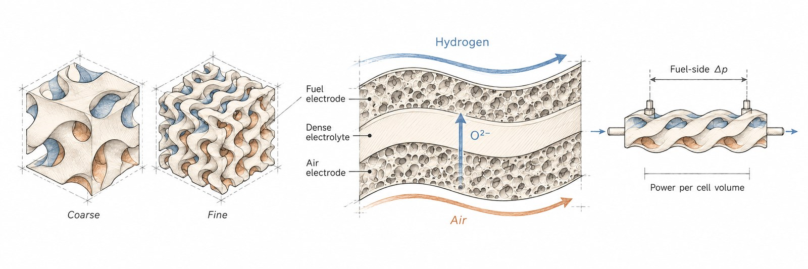

On a space mission, a fuel cell earns its place by how much usable power it delivers for each gram and cubic centimeter it occupies. At DTU, we have 3D-printed a solid oxide cell in the shape of a gyroid. A thin, curved ceramic wall separates two interwoven networks of channels, one carrying fuel and the other air. This geometry fits a large electrode area into a small volume. Our Nature Energy paper demonstrated cell-level power densities above 1 W g⁻¹ and 3 W cm⁻³ in fuel-cell operation. Our Joule paper, Electrochemical energy conversion beyond Earth, provides the wider motivation for lightweight electrochemical devices.
How tightly can we pack the gyroid channels before the difficulty of supplying fuel begins to offset the gain in electrode area?
In this project, you will compare two channel sizes in cells with the same external dimensions. You will test them on hydrogen and air and determine which geometry delivers more power at a useful operating voltage.

What you will deliver. A measured comparison of two printable designs and a recommendation for the next cell prototype. The most informative result will be whether the finer gyroid's extra internal area translates into more power at the same fuel utilization, and what pressure drop accompanies that gain.
You will work with Prof. Vincenzo Esposito and colleagues at DTU Energy on ceramic additive manufacturing and solid oxide cell testing. The thesis focuses on a single cell in fuel-cell mode, from the printed architecture to its electrical performance.
Get in touch through the DTU Orbit profile with a short note and your transcript.